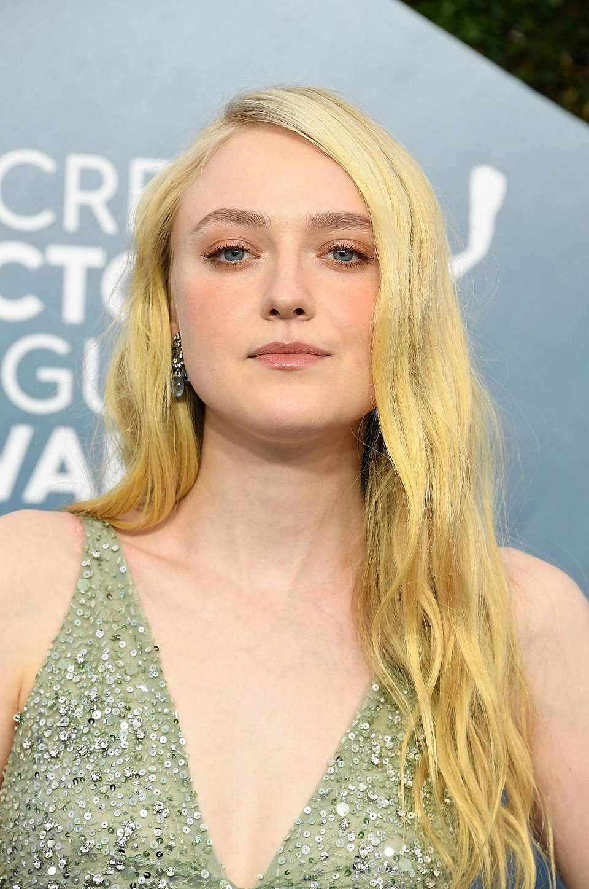
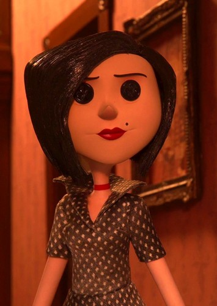
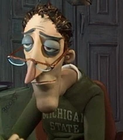
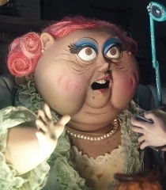
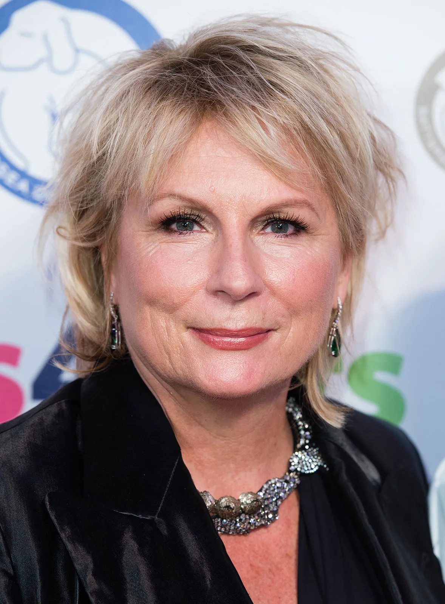

"You think they're trying to poison me?" - Coraline Jones
Coraline is a 2009 stop-motion animated movie directed by Henry Selick, based on the book by Neil Gaiman. A young girl finds a mysteriouis door in her new home and discovers an alternate world where everything is perfect, almost too perfect.
 Dakota Fanning as Coraline Jones
 Teri Hatcher as Mel Jones
 John Hodgman as Charlie Jones
  Jennifer Saunders as Miss April Spink